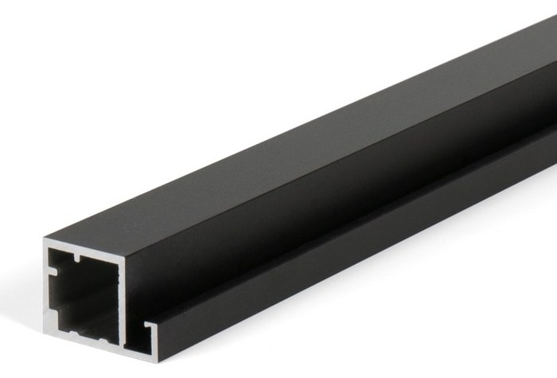

Профиль для воздушных, лёгких конструкций в духе минимализма и чистых линий.
| Петли | фирменные JAZZ AIR 105° (скрытые) и JAZZ 100° (в цвет профиля) |
| Цвета | чёрный, золото, мокко, нержавеющая сталь |
| Под заказ | рамки по размеру, фрезеровка под петли |
| Комплектующие | уплотнители, сборочные уголки с винтами |